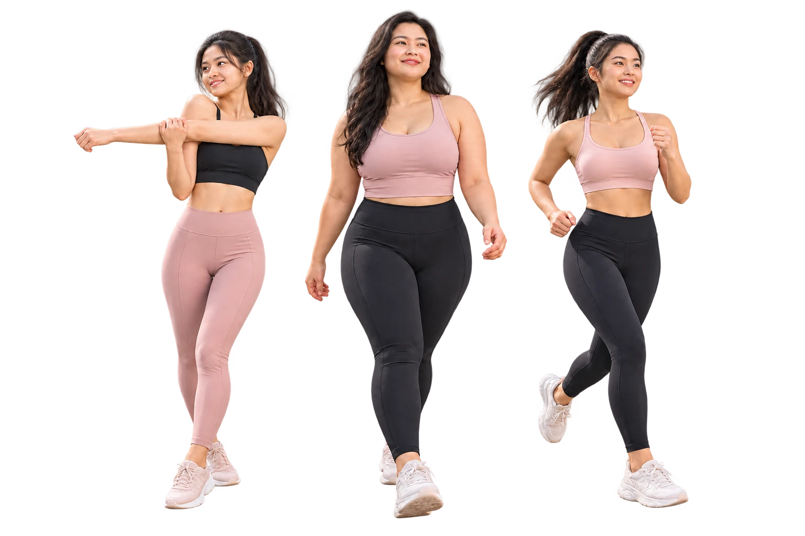
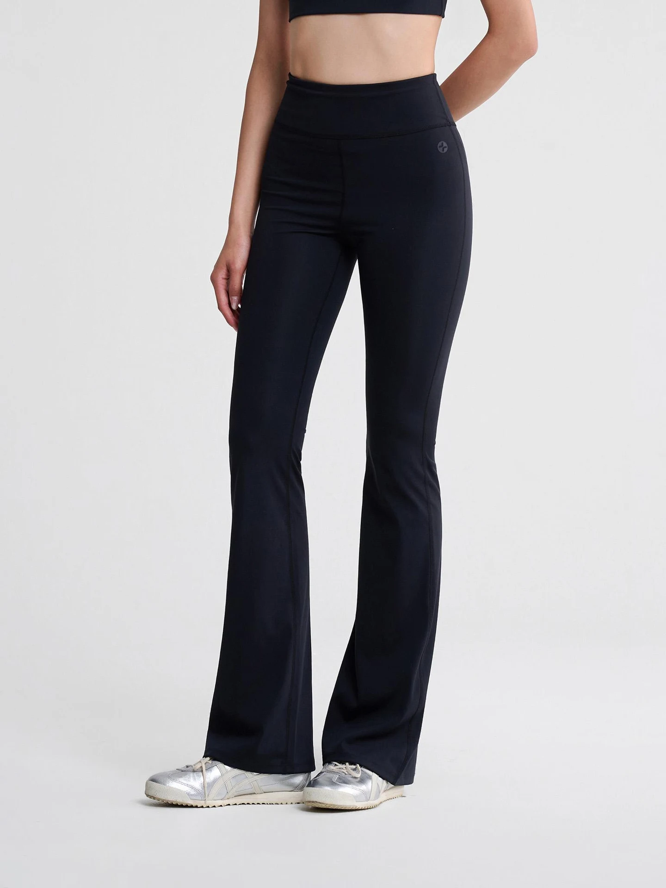

MOVE
YOUR WAY
Vận động theo cách của bạn.
Cùng Coolmate Women Active khám phá điều bạn cần ở đồ tập — bắt đầu từ môn bạn thích và cảm giác bạn muốn tìm.
Chọn môn và điều bạn quan tâm để xem hướng dẫn.

Coolmate Women Active
Phù hợp vóc dáng,
tự tin trong từng chuyển động.
Bạn vận động thế nào,
bắt đầu từ đó.
Mỗi cơ thể, mỗi môn tập có những nhu cầu riêng.
Chọn một môn và một điều bạn quan tâm. Cùng MOVE YOUR WAY tìm hiểu những điểm nên chú ý khi chọn đồ.
Vuốt để xem các môn hoặc dùng nút trước và tiếp theo.
Gợi ý cập nhật khi bạn đổi lựa chọn.
Điều nên chú ý khi chọn đồ
Xem cách kiểm tra khi chọn đồBạn đã biết điều mình muốn chú ý. Tiếp theo, hãy nhìn một mẫu đồ tập theo cả chi tiết và chuyển động.
Chọn đồ, nhìn cả
lúc chuyển động.

Phom dáng & chiều dài
Quan sát vị trí cạp, chiều dài áo và quần. Khi chuyển động, bạn có phải kéo hoặc chỉnh trang phục nhiều lần không?
Cạp & đường may
Thử ngồi, cúi hoặc bước dài. Chú ý cạp có cuộn, trượt hay gây siết; đường may có cấn hoặc cọ xát không.
Độ che phủ
Kiểm tra trong tư thế bạn thường tập và dưới ánh sáng rõ, bên cạnh việc xem ảnh khi đứng yên.
Chất liệu & size
Đọc thành phần, độ ôm và hướng dẫn chăm sóc. Đo theo hướng dẫn rồi đối chiếu bảng size của đúng mẫu.
Xem hướng dẫn chọn size nữKhám phá đồ tập tại Coolmate
Bạn đang khám phá Yoga & Pilates.
Xem các mẫu, màu sắc và size trên Coolmate.
Muốn giữ lại những điều vừa khám phá để dùng khi xem hoặc thử đồ? Cẩm nang bên dưới tập hợp chúng ở một nơi.
Mang hướng dẫn theo.
Chọn khi sẵn sàng.
Cẩm nang chọn đồ tập MOVE YOUR WAY giúp bạn xem lại những điều cần chú ý khi tìm hiểu hoặc thử đồ.
Bạn đã hoàn tất bước đăng ký mô phỏng
Không có email nào được gửi. Mở cẩm nang để đọc hoặc lưu dùng sau.
Mở cẩm nangTiếp tục cùng
MOVE YOUR WAY.
Muốn tự thử trước khi chọn, hay kể lại một buổi tập của mình? Chọn cách bạn quan tâm.
Women Active Fest
Từ tìm hiểu đến tự cảm nhận.
Một buổi sáng được đề xuất để cùng vận động, thử đồ tập và tìm hiểu cách chọn size.
Kế hoạch dự kiến · Chưa mở đăng ký chính thức
21/02/2027 · 07:00–11:30
Công viên Yên Sở, Hà Nội
Miễn phí theo kế hoạch
Kể một chuyển động
của bạn.
Một buổi chạy chậm, một động tác mới, một cách phối đồ bạn thích. Câu chuyện có thể bắt đầu từ điều nhỏ như vậy.
Nhịp của bạn.
Câu chuyện của bạn.
Soạn lời chia sẻ
Tối đa 140 ký tự.Lời chia sẻ để bạn sử dụng
Bạn có thể dán và chỉnh lời chia sẻ cùng ảnh hoặc video của mình trên TikTok.
Bạn còn
muốn biết gì?
Chọn câu hỏi để xem câu trả lời.
Tôi nhận được gì khi chọn môn và ưu tiên?
Bạn sẽ thấy những điều nên chú ý khi chọn đồ cho hoạt động đó, cùng một lưu ý theo ưu tiên đã chọn. Từ kết quả, bạn có thể xem cách kiểm tra trang phục. Liên kết xem đồ tập nằm ở cuối phần hướng dẫn và thay đổi theo môn bạn chọn.
Tôi tập nhiều môn thì sao?
Bạn có thể đổi môn để so sánh các lưu ý. Khi tìm một mẫu dùng cho nhiều hoạt động, hãy kiểm tra các chuyển động và nhu cầu hỗ trợ tương ứng.
Tôi nên chọn size thế nào?
Đo theo hướng dẫn của loại trang phục và đối chiếu bảng size của mẫu bạn định chọn. Nếu chưa chắc, tham khảo kênh tư vấn trên website Coolmate. Xem hướng dẫn chọn size nữ
Tôi xem giá và mua sản phẩm ở đâu?
Các liên kết sản phẩm và danh mục mở website Coolmate. Xem giá, màu, size, tồn kho và điều kiện mua hàng tại đó. Xem điều kiện đổi trả
Tôi đã đăng ký được chỗ tại Fest chưa?
Ngày hội đang ở trạng thái kế hoạch dự kiến và chưa mở đăng ký chính thức.